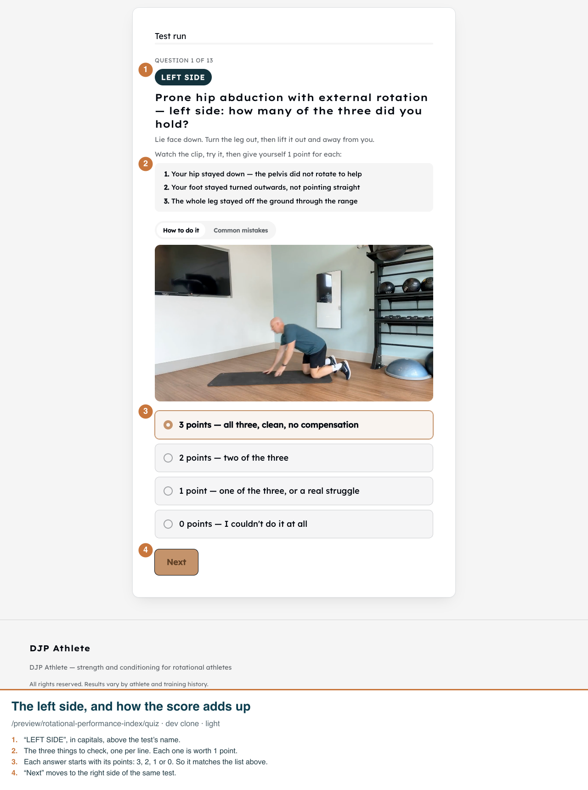
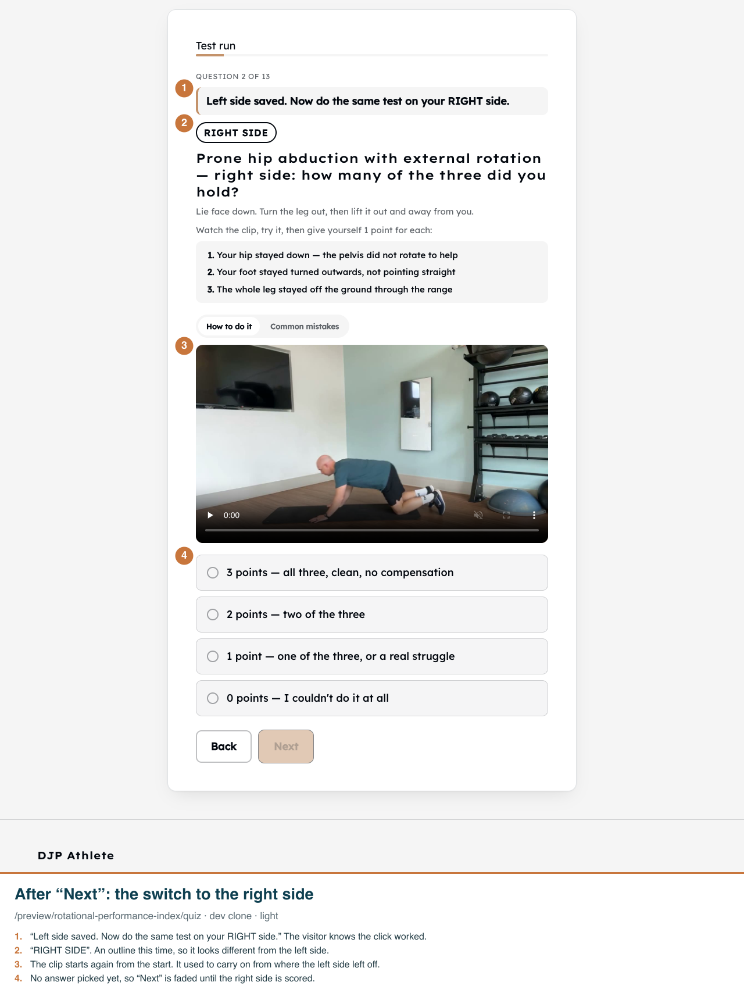
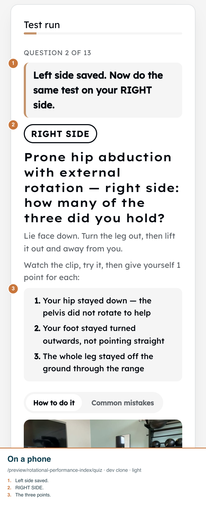

Real app on the dev clone, a /preview/rotational-performance-index test run (nothing saved), and the quiz editor (edit typed, never saved). Funnel pages and admin have no dark mode.
1. The first test. The side is in capitals at the top, the three things to check are a numbered list worth a point each, and every answer starts with its points.

2. The same test, now the right side. A note says the left side was saved, the badge changes to an outline reading RIGHT SIDE, and the clip starts again from the beginning.

3. The same moment on a phone. The note and the side are the first things on screen.

4. The quiz editor, scrolled down to a question. The instructions under the question can now be edited. After any change, the top says “Unsaved changes” and stays in view.